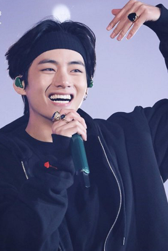

Kim Tae-hyung (Korean: 김태형; born December 30, 1995), also known by his stage name V, is a South Korean singer, songwriter, and actor. He is a vocalist of the South Korean boy group BTS.
V was born Kim Tae-hyung on December 30, 1995, in the Seo District of Daegu, South Korea, and grew up in Geochang County. He is the eldest of three children, with a younger brother and sister. V first aspired to be a professional singer in elementary school, and eventually began taking saxophone lessons in early middle school as a means of pursuing the career. V's father agreed with his journey on learning how to play the saxophone. V initially became a trainee for Big Hit Entertainment after passing an audition in Daegu. After graduating from Korean Arts High School in 2014, V enrolled in Global Cyber University.
2013–present: BTS On June 13, 2013, he made his debut as a member of BTS on Mnet's M Countdown with the track "No More Dream" from their debut single album, 2 Cool 4 Skool. On October 24, V became one of the youngest recipients of the prestigious fifth-class Hwagwan Order of Cultural Merit medal, awarded to him by the President of South Korea along with the other members of BTS for their role in the spread of culture. V, together with bandmate J-Hope, collaborated with Swedish singer Zara Larsson on a song called "A Brand New Day" for the soundtrack album of their mobile game BTS World. It was released on June 14, 2019 and debuted at number 1 on World Digital Song Sales Chart. Eight months later, he collaborated with bandmate Jimin for the song "Friends" and he also participated in the composition and writing of his solo song, "Inner Child" on their album Map of the Soul: 7.
In 2016, V made his acting debut with a supporting role in KBS2's historical drama Hwarang: The Poet Warrior Youth under his real name. He also collaborated with bandmate Jin on a duet for its soundtrack entitled "It's Definitely You". To celebrate BTS' fourth anniversary, V released "4 O'Clock" on June 8, 2017, a song he co-produced with bandmate RM. V released his first full solo track outside of BTS, "Scenery", on January 30, 2019 through the group's SoundCloud page. The ballad was written and composed by V (who also photographed the cover artwork), produced by Big Hit Entertainment producer Docskim, and featured additional contributions from Big Hit producers Pdogg and Hiss Noise.
Seven months later, he released his second solo song and his first full English song entitled "Winter Bear" through SoundCloud, accompanied by a self-directed music video via BTS' YouTube channel on August 9. He co-produced the track together with RM, Hiss Noise, and Adora. He also photographed the cover artwork using his pseudonym Vante.
In 2020, V participated in a song titled "Sweet Night" for the soundtrack of the JTBC drama Itaewon Class which was released on March 13, 2020. Produced, written and sung by V, the indie pop song is entirely in English. The song received generally favourable reviews for its composition, vocal performance and warm lyrics, and debuted at number 2 on Billboard's U.S. Digital Song Sales chart, the highest debut for a Korean soloist in the chart's history. On December 25, 2020, V released a solo track titled "Snow Flower" featuring Peakboy.
V coined the phrase "I purple you" during BTS' fanmeeting in November 2016. Ever since then, purple has become a symbol of BTS and their fans. UNICEF also used the phrase for their anti-bullying campaign in collaboration with BTS.
As a performer, V's style is known for its "duality", or his ability to evoke various emotions on stage. British journalist Rhian Daly, writing for NME, particularly noted this when discussing V's performance of "Singularity" during the Love Yourself: Speak Yourself World Tour, describing his movements as "precise and deliberate". Crystal Bell from MTV noted V's performances often work with live cameras in concert venues, and how he utilizes them to create subtle expressions during performances.